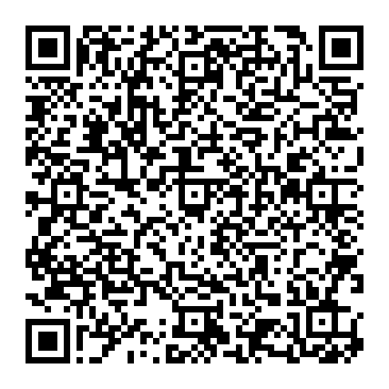

Apoio voluntário
Apoie o Observatório de Taxas
O Observatório de Taxas é um projeto independente que disponibiliza gratuitamente indicadores econômicos, séries históricas e ferramentas de reajuste e correção monetária.
Se o projeto foi útil para você, considere fazer uma contribuição voluntária.
Seu apoio ajuda a manter a infraestrutura, a atualização dos dados e o desenvolvimento de novas funcionalidades.
Contribua via Pix

- Recebedor
- LBP TECNOLOGIA
- Cidade
- São Paulo
- Valor
- Livre: você escolhe no app do banco
- No app do seu banco, abra o Pix e escolha Pix Copia e Cola (ou leia o QR Code).
- Cole o código e digite o valor que quiser.
- Confira se o recebedor é LBP TECNOLOGIA antes de confirmar.
Como funciona
O Observatório permanece gratuito, independentemente de qualquer contribuição.
Os pagamentos são processados diretamente pelo banco do contribuinte. O site não coleta dados bancários nem acompanha a confirmação das transferências.
Como em qualquer Pix, o banco mostra a você os dados do recebedor antes da confirmação, e o recebedor vê o nome de quem pagou.